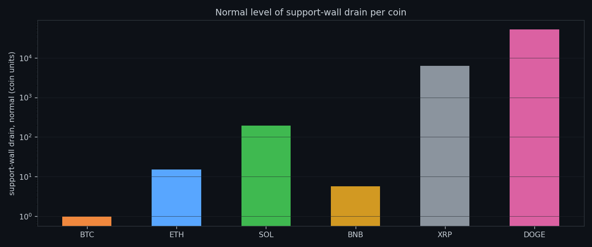
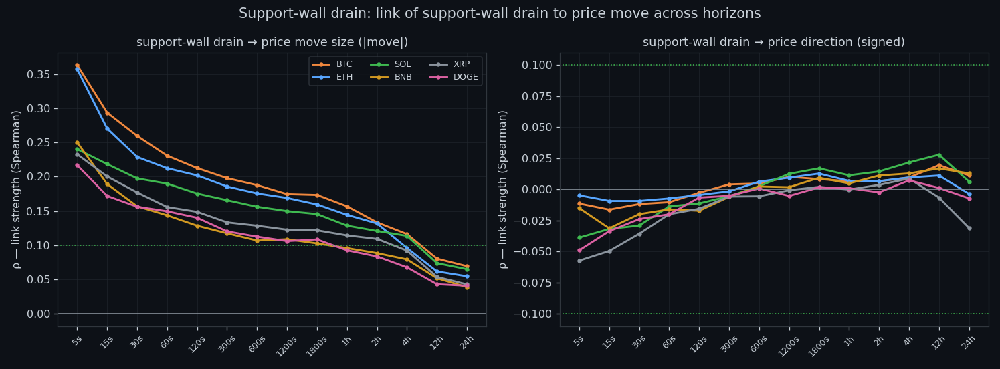
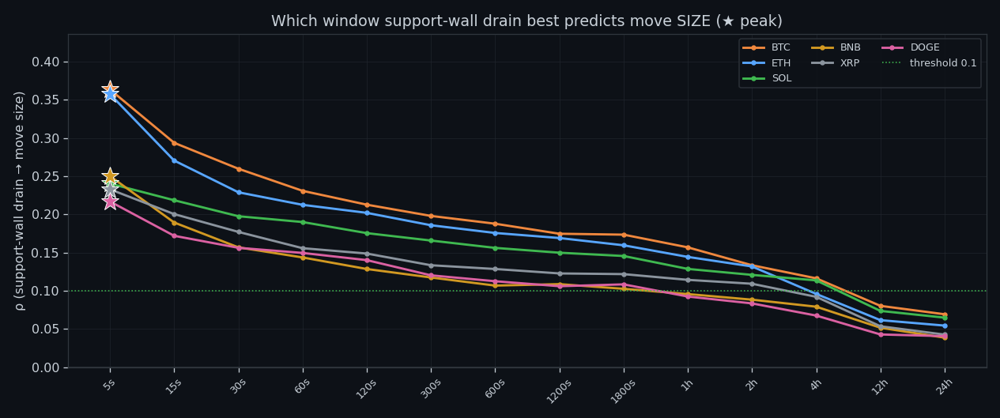
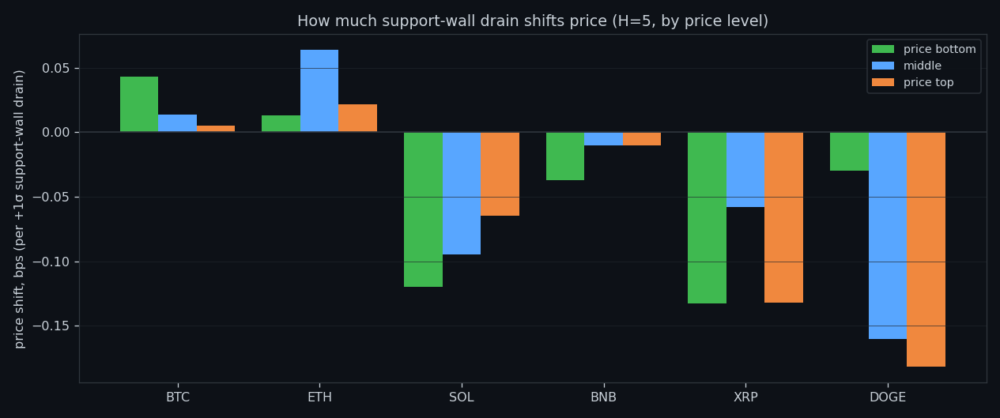
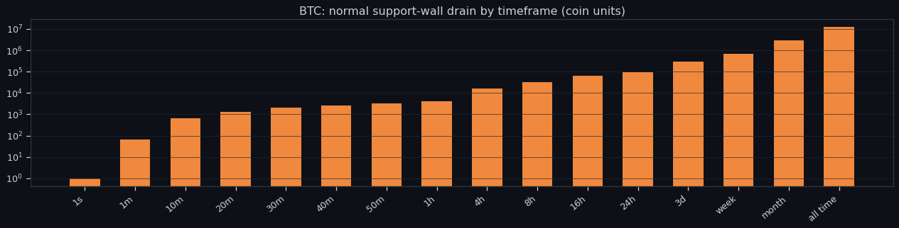
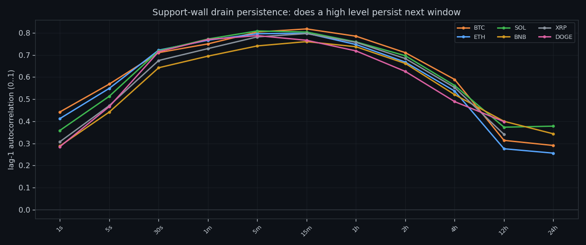
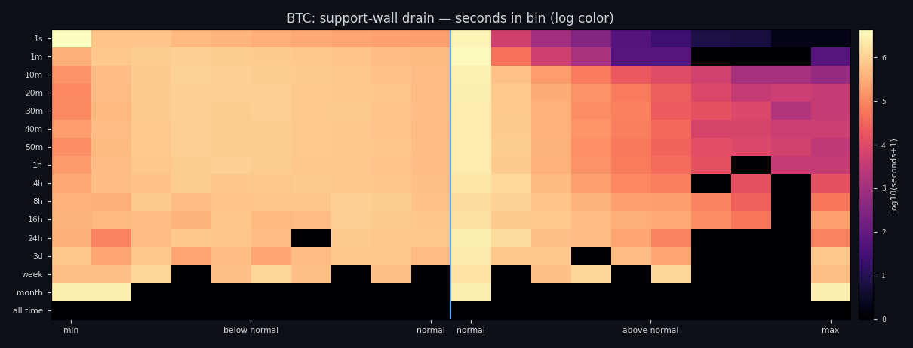
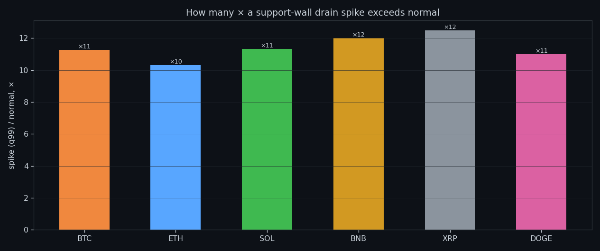
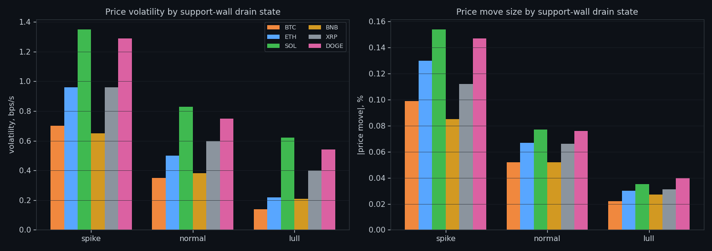
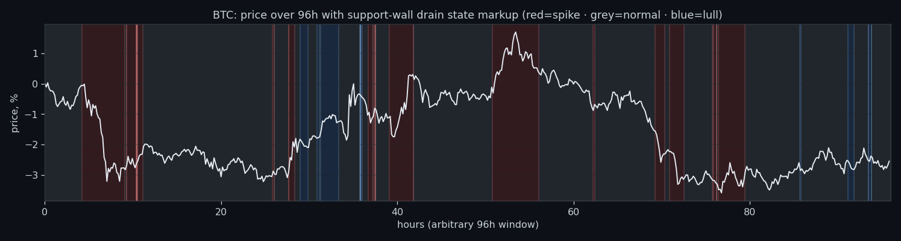

Drain Out of the Buy Wall: Liquidity Leaving Before the Move
We isolated drain out of the buy wall — one feature, no partner, no composite — and measured what it predicts second by second across six coins. The answer is the size of the next move, never its side.
① The shape of drain out of the buy wall
Before asking what drain out of the buy wall predicts, we look at what it is: how the quantity is distributed across its own range, per coin. The profile is heavily skewed — long stretches of very little, punctuated by rare, very large readings. Every threshold later in the study is a quantile of this shape, not a round number picked by hand.

② What it predicts, across horizons
Rank correlation of drain out of the buy wall with the size of the next move peaks at the fastest horizon (+0.36 on BTC at 5s) and decays monotonically toward the daily scale (+0.07). Direction is a different story: the same sweep against signed returns tops out around 0.06. Size, yes; side, no.

③ Where each coin peaks
The best window differs by coin but always sits at the short end — 5s to 5s. Anything slower than that is reading yesterday's news.

④ Price impact per unit
Per +1σ of drain out of the buy wall, price moves by a fraction of a basis point, and the sign is not stable across bands. This is the quantitative version of 'it does not push price in a usable direction'.

⑤ What counts as normal
Normal levels of drain out of the buy wall grow by orders of magnitude from a second to a day, so 'high' is always relative to a window. This chart is the baseline every later threshold is measured against.

⑥ Memory
Autocorrelation of drain out of the buy wall starts at 0.29–0.44 at the finest scale and rises to 0.76–0.82 at intermediate windows. The quantity clusters in time: a busy minute follows a busy minute far more often than chance allows.

⑦ Where the seconds live
Most seconds carry almost no drain out of the buy wall; the interesting behaviour is confined to a thin tail. Working with means here would describe a market that does not exist.

⑧ How large the extremes get
A peak second of drain out of the buy wall runs many times above its own normal. That ratio is what makes threshold rules feasible at all — the extremes are unmistakable once the baseline is right.

⑨ Spike, normal, lull
Every moment gets labelled relative to its own baseline. The three states separate cleanly in volatility and poorly in direction — the same result the whole project keeps producing.

⑩ The states over price
The labelling drawn directly over a BTC price window: where drain out of the buy wall changes state, and what price does around it.
Research, not financial advice.

If this changed how you read the tape, the natural next step is Volume Is the Fuel — Not the Steering Wheel — We recorded the Binance order book every second for six coins over five months and ran eighteen tests on what volume really does.
Volume Is the Fuel — Not the Steering Wheel
We recorded the Binance order book every second for six coins over five months and ran eighteen tests on what volume really does.
About Market Research Lab — What We Collect and Why
Most market commentary is storytelling.
The Wall That Goes Quiet: What Resting Liquidity Predicts
We measured resting limit liquidity sitting on both sides of the book second by second across six coins, and asked the only question that matters:….
Liquidity Pulled: What Happens When a Wall Drains
We measured resting liquidity being pulled away from the book second by second across six coins, and asked the only question that matters: does it….
Comments
Discussion is powered by GitHub. Enable it by adding secrets/giscus.json (repo IDs from giscus.app).